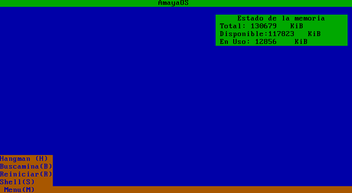
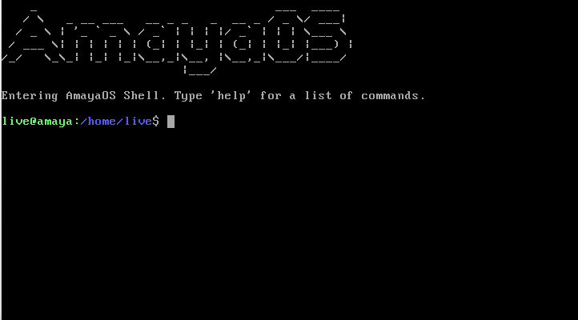
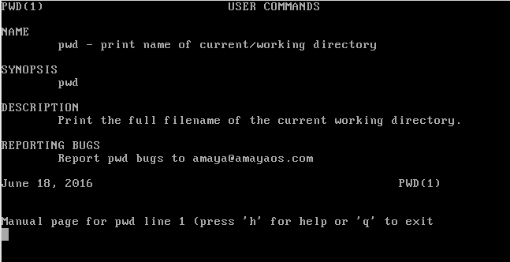
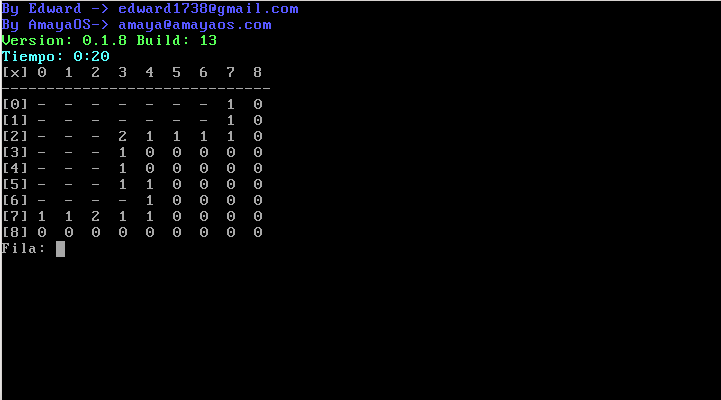

Screenshots
Here are available some screenshots of the Amaya Operating System (v0.09). However, to enjoy its full potential we recommend you to get it

This is the interface, based on text (TUI) and fairly easy to use

Using the keyboard you can select any menu option

AmayaOS, like all the UNIX-like operating systems has a shell that allows us to interact with the system. In our operating system it is the main interface.

AmayaOS has a group of utilities called Coreutils that do simple tasks

AmayaOS has its own port of man. In this image is showing us the pwd man-page

AmayaOS 0.09, executing minesweeper